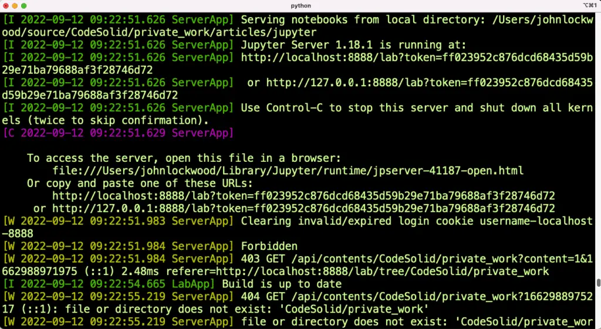
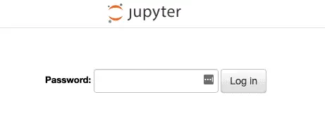

Jupyter Password: Easy Notebook and Lab Configuration¶
In general, getting started launching Jupyter is not that hard. You generally run one of your preferred commands from the terminal; most people settle on one of these commands after a while:
jupyter notebookjupyter labjupyter nbclassic
(By the way, if all of this is new to you or you need a quick refresher on Jupyter, check out Jupyter Notebook: A Complete Introduction).
Whichever command you use, Jupyter automatically opens a browser tab, and you’re now looking in the right place.
So what’s the problem? None whatsoever if you don’t use Jupyter much – the scenario I just mentioned works fine. However, suppose you use Jupyter a lot. In that case, you might be annoyed when you close your browser or want to view your notebook in a different browser than the default. When you do that, you have to scroll back up in a lengthy terminal window to find the correct token to use. Here’s how it looks without password authentication:

That’s not exactly Medusa turns-you-to-stone ugly, but it’s pretty close, and it’s not fun to find if you’ve been using that terminal window for a while.
The solution to this is to set up a known password. Once you do that, you won’t need a username, but you will need to enter that password once for each browser session (not each window or tab). Since doing this, I rarely have to re-enter it, but it’s nice that when I do, I know the password and don’t have to go hunting for a token URL.
Before setting up our Jupyter password, however, and by way of explaining why I’m going to ask you to do so twice, we need a brief introduction to Jupyter’s configuration.
Jupyter Notebook Password or Jupyter Server Password?¶
Like any successful software project, the Jupyter project has evolved, and that evolution is continuing today. That’s generally good news, but it does mean that depending on what version of Jupyter you’re running and how you launch it, the configuration may be stored in one of two places:
~/.jupyter/jupyter_notebook_config.json
~/.jupyter/jupyter_server_config.json
If you’re a Windows user, instead of the ~ symbol for the user’s home directory, you can substitute %homedrive%%homepath%. So on Windows, the locations would be:
%homedrive%%homepath%.jupyter\jupyter_notebook_config.json
%homedrive%%homepath%.jupyter\jupyter_server_config.json
Note that you may not see these files if you’ve never set a password or done other configurations, but one or both of them should be there after you’ve stored your password (by default it will be hashed using argon2, so you won’t see it in plain text).
Setting the Password¶
Because there are now two places where your Jupyter configuration might be stored, we need to try to set our password twice. This is done as shown below. In each case, you’ll be prompted to type the password once and then confirm it.
jupyter notebook password
jupyter server password
The first command is likely to work in all cases. The second command may not be available if you’re not running a recent version of JupyterLab, but in that case, you can safely ignore it at this point.
Once you’ve done this, when you next start Jupyter, you’ll see this prompt:

Again, you only have to enter your password once per browser session and won’t need to re-enter it for every tab you might want to launch.
If You Forget The Password¶
If you forget the password, don’t panic. The procedure from the last section also allows you to reset the password to a new value, and it doesn’t prompt you for the old password to do so. As an alternative, if you just decide you’d rather remove password authentication altogether, see the following section.
Removing The Password¶
If you ever decide you want to go back to token authentication for whatever reason, you can remove the password in several ways.
The safest thing to do is simply to rename or move the configuration files (see the configuration section above for their locations). This is just a precaution, in case you have other configurations stored in them. You can safely delete them after making sure everything works as you expect. (You should no longer have to enter a password the first time, but you’ll need to scroll through the ugly for tokens if you open a different browser or restart the same browser).
If you do need to keep the configuration files and edit the password out of them, here are the relevant sections:
# juptyer_server_config.json
"ServerApp": {
"password": "argon2:$argon2id$v=19$m=10240,t=10,p=8$dFt/cfCfatHGYbfZT+XwVw$wn0dewTxxSChtS3QD02wTqxuUkdmf0zsBKyqlosCUJE"
}
# juptyer_notebook_config.json
"NotebookApp": {
"password": "argon2:$argon2id$v=19$m=10240,t=10,p=8$TwAFANGEVNgfix4gDRIp4w$F1XJnyqoBltqx5/Gwh5i+fcVHCR95kq3pSTLhV62cgU"
}
Removing just the line beginning with “password” will get you back to token authentication. (By the way, those hashes look different, but they represent the same password in both cases. And of course, I’ve reset them after writing this.)
Closing Thoughts¶
I am definitely a fan of password authentication for Jupyter. Token authentication is great for the simple case since the app will just launch, but if you find yourself closing your browser or changing browsers while leaving the server up, you then have to hunt for the token, which is generated each time randomly.